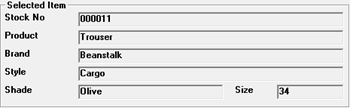

To select the items, for which the labels are to be printed, from purchase orders.
PO Prefix: Enter the prefix of Purchase Order.
PO No From/ To: Enter the range of document numbers from which to pick the items for which the tags are to be printed.
The first item's details in the specified purchase orders are displayed in the Selected Item grid. Use  to view the first, previous, next or the last item in the list.
to view the first, previous, next or the last item in the list.

Labels to Print:
Specified Quantity: This option is not available as we cannot specify a quantity in this case.
Present Stock: This option is not available in HO.
Total Records: The cumulative total of all item numbers in the selected purchase orders is displayed.
Current Stock: This option is not available in HO as present stock cannot be chosen.
Labels to Print: The cumulative purchase quantity, as specified in the purchase orders, for the item currently listed in the Selected Item grid is displayed.
Note: On clicking OK, you will get the provision to select the printer on which the labels need to be printed, if you are using the new script file (.blf).